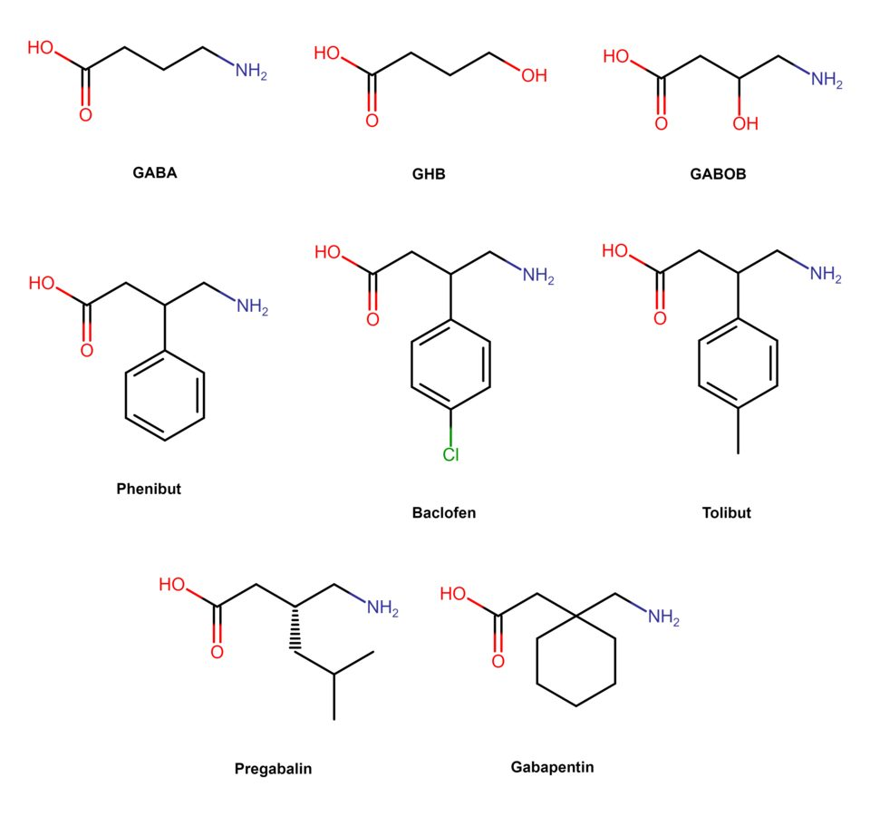

Para qué sirven
Los fármacos antiepilépticos, hoy también llamados anticrisis, previenen las crisis epilépticas porque reducen la excitabilidad de las neuronas. No curan la causa de la epilepsia, pero la controlan: con el primer o el segundo fármaco bien elegido, alrededor del 70 % de los pacientes queda libre de crisis. Hay más de 25 disponibles. Desde el fenobarbital (1912) y la fenitoína (1938) hasta los fármacos de los últimos años, cada generación ha ganado en tolerancia y en menos interacciones.
Cómo actúan
| Mecanismo | Ejemplos |
|---|---|
| Bloquean los canales de sodio de las neuronas | Carbamazepina, oxcarbazepina, eslicarbazepina, lamotrigina, lacosamida, fenitoína |
| Actúan sobre la proteína SV2A de las vesículas sinápticas | Levetiracetam, brivaracetam |
| Refuerzan el freno del GABA | Benzodiacepinas (clobazam, clonazepam), fenobarbital, vigabatrina |
| Bloquean los canales de calcio | Etosuximida (ausencias), gabapentina, pregabalina |
| Bloquean los receptores AMPA del glutamato | Perampanel |
| Varios mecanismos | Ácido valproico, topiramato, zonisamida, cenobamato |
Los más usados
- Levetiracetam: muy usado por su facilidad de manejo y pocas interacciones. Puede producir irritabilidad o cambios de humor.
- Lamotrigina: bien tolerada, de elección en muchas mujeres en edad fértil. Hay que subir la dosis muy despacio para evitar reacciones graves en la piel.
- Lacosamida, oxcarbazepina, eslicarbazepina y carbamazepina: en las crisis focales. La carbamazepina tiene muchas interacciones.
- Ácido valproico: muy eficaz en las epilepsias generalizadas, pero no debe usarse en niñas ni en mujeres que puedan quedarse embarazadas salvo que no haya alternativa, por el riesgo de malformaciones y de problemas del desarrollo en el bebé.
- Etosuximida: en la epilepsia de ausencias infantil.
- Cenobamato: uno de los más eficaces en la epilepsia focal resistente.
- Clobazam, perampanel, topiramato, zonisamida, brivaracetam como añadidos.
- Para síndromes concretos: vigabatrina (síndrome de West, esclerosis tuberosa), estiripentol, fenfluramina y cannabidiol (Dravet, Lennox-Gastaut). Ver epilepsias de la infancia.
Cómo se elige
El neurólogo tiene en cuenta:
- El tipo de epilepsia: algunos fármacos útiles en las focales empeoran ciertas generalizadas (la carbamazepina puede empeorar las ausencias y las mioclonías).
- La edad, el sexo y el deseo de embarazo.
- Otras enfermedades (depresión, migraña, sobrepeso, riñón, hígado) y otros fármacos.
- Los posibles efectos adversos.
Se empieza con un solo fármaco, a dosis baja que se sube poco a poco. Si no funciona, se cambia o se añade otro. Si dos fármacos adecuados fallan, se habla de epilepsia farmacorresistente y hay que valorar en una unidad de epilepsia la cirugía u otras opciones.
Efectos adversos
- Frecuentes: somnolencia, mareo, cansancio, inestabilidad, visión doble, sobre todo al empezar o al subir la dosis.
- Del ánimo y la conducta: irritabilidad o depresión (levetiracetam, perampanel, topiramato).
- De la piel: erupciones, raramente graves (lamotrigina, carbamazepina, fenitoína). Ante una erupción con fiebre o afectación de las mucosas, hay que consultar urgentemente.
- Del peso: aumento (valproico, pregabalina) o pérdida (topiramato, zonisamida).
- Sodio bajo (oxcarbazepina, carbamazepina), problemas de memoria y de palabras (topiramato), osteoporosis con el uso prolongado de algunos.
- Muchos interaccionan con otros fármacos, incluidos los anticonceptivos hormonales, cuya eficacia pueden reducir.
Embarazo
Las mujeres con epilepsia pueden tener hijos sanos, pero el embarazo debe planificarse:
- Revisar el tratamiento antes del embarazo, nunca suspenderlo por cuenta propia.
- Lamotrigina y levetiracetam son los de menor riesgo conocido. El valproato es el de mayor riesgo, seguido del topiramato.
- Tomar ácido fólico.
- Vigilar los niveles: algunos fármacos bajan durante el embarazo.
- La lactancia materna se recomienda en la mayoría de los casos.
Consejos
- Tómalos todos los días, a la misma hora. Las alarmas del móvil y los pastilleros ayudan.
- No los suspendas de golpe: puede desencadenar crisis graves.
- Si olvidas una dosis, consulta el prospecto o a tu farmacéutico: en general, se toma en cuanto te acuerdes salvo que falte poco para la siguiente.
- Consulta antes de tomar otros medicamentos, plantas (como la hierba de San Juan) o anticonceptivos.
- Tras dos o más años sin crisis, se puede plantear retirarlos poco a poco, valorando el riesgo de recaída. Ver ¿la epilepsia se cura?.
Historia · Medicapedia
La historia de estos fármacos
Cómo se descubrió cada medicamento y cómo cambió el tratamiento, en Medicapedia, nuestra enciclopedia hermana de historia de la medicina.
Medicamentos · Farmacos.ai
Fichas de los fármacos
Para qué sirve cada medicamento, cómo se toma, efectos adversos e interacciones, con la ficha técnica oficial, en Farmacos.ai.
Fuentes
- Kanner AM, Bicchi MM. Antiseizure medications for adults with epilepsy: a review. JAMA. 2022;327:1269-81.
- Marson A, et al. The SANAD II study of the effectiveness and cost-effectiveness of levetiracetam, zonisamide, or lamotrigine for newly diagnosed focal epilepsy. Lancet. 2021;397:1363-74.
- Marson A, et al. SANAD II: valproate versus levetiracetam for newly diagnosed generalised and unclassifiable epilepsy. Lancet. 2021;397:1375-86.
- Tomson T, et al. Comparative risk of major congenital malformations with eight antiepileptic drugs (EURAP). Lancet Neurol. 2018;17:530-8.
- Agencia Española de Medicamentos y Productos Sanitarios. Valproato: nuevas medidas para evitar la exposición durante el embarazo. 2018.